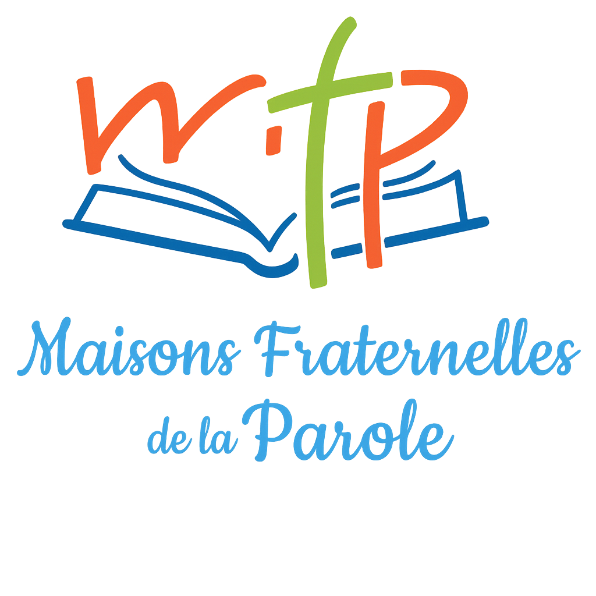

Maisons Fraternelles de la Parole

Les Maisons fraternelles de la Parole sont des fraternités missionnaires centrées sur la louange, dans la force de l’Esprit Saint.La Parole de Dieu y est priée, enseignée, partagée, annoncée.Elles permettent l’expérience personnelle de la rencontre avec le Seigneur et la croissance spirituelle de chacun.Elles sont ouvertes à tous et forment des disciples missionnaires dans le monde et participent à la vie de l’Eglise.Elles sont sous la vigilance de la commission épiscopale chargée du suivi du Renouveau et sont en lien avec le Service national de communion CHARIS. Contact : maisonfratparolebe@outlook.fr tel. +32 487 60 57 45